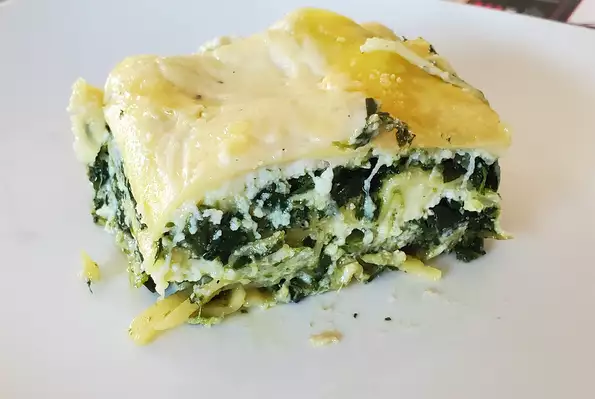

Pesto Lasagna Recipe

Scrumptious lasagna with basil pesto, spinach and plenty of bubbly cheese
Ingredients
- 1(200g) package lasagna pasta
- 2 tablespoons olive oil
- 1 small onion
- 200g spinach
- 100g basil pesto
- 800g ricotta cheese
- 1 egg
- 1/2 teaspoon salt
- 1/4 teaspoon ground black pepper
- 1/4 ground nutmeg
- 2 cups mozzrella cheese
- 150g Bechamel sauce
- 1/4 grated Parmesan cheese
Steps
- Preheat the oven to 175 degrees C
- Bring a large pot of lightly salted water to a boil. Add lasagna and cook for 10 minutes or until al dente ; drain.
- In large skillet over medium heat, saute chopped onion in olive oil until tender. Stir in spinach;remove from heat and stir in pesto
- In a large bowl mix ricotta cheese, egg, salt, pepper, and nutmeg
- In a medium sized greased baking dish, layer noodles then spinach mixture, followed by ricotta mixture. Sprinkle with sliced cut mozzrella cheese. Repeat the layers ending with pasta on top. Spread Bechamel sauce on top of the pasta and sprinkle with parmesan cheese
You can enjoy other delicious recipes as this one in the following links